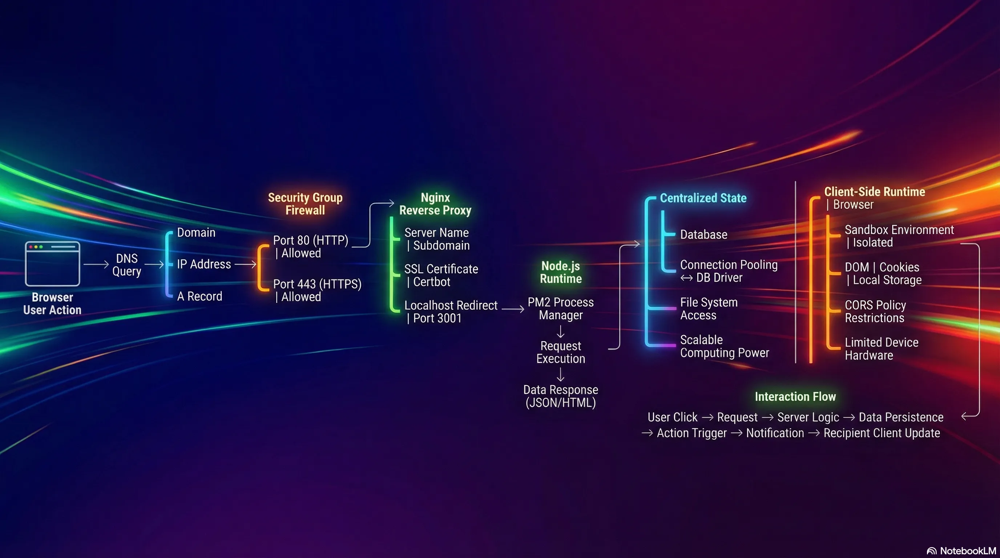

Introduction to Backend Engineering
What Is a Backend, How It works and Why Does It Matter?

1. Definition of a Backend
1.1. Traditional Definition
A backend is a computer that listens for requests through an open port (accessible over the internet) to allow clients or frontends to connect, send data, or receive data.
- Communication Protocols: HTTP, WebSocket, gRPC.
- Common Ports:
- 80: Standard HTTP.
- 443: Secure HTTPS.
- Role: It is called a "Server" because it provides or "serves" content.
- Content Types Served:
- Static files (Images, JavaScript, HTML).
- Data formats (JSON).
- Data Ingestion: It accepts data sent by the client.
%%{init: {"theme": "dark", "themeVariables": {"primaryColor": "#2d2d2d", "primaryTextColor": "#e6edf3", "primaryBorderColor": "#444444", "lineColor": "#9aa0a6", "secondaryColor": "#3a3a3a", "tertiaryColor": "#2d2d2d"}}}%%
flowchart LR
Client[Client/Frontend] -->|HTTP :80| Server[Backend Server]
Client -->|HTTPS :443| Server
Client -->|WebSocket| Server
Client -->|gRPC| Server
Server -->|JSON| Client
Server -->|HTML/CSS/JS| Client
Server -->|Images| Client2. End-to-End Request Flow (Backend Demo)
This trace follows a request starting from a browser and reaching a backend server deployed on AWS.
2.1. Step 1: The Browser & Domain Name
- Action: A request is initiated by entering a domain name in the browser (e.g.,
backend-demo.senus.doxyz). - Initial Lookup: The browser must resolve this domain name to an IP address to know where to connect.
2.2. Step 2: DNS Server (Domain Name System)
The DNS server translates domain names into IP addresses. It contains specific record types:
- A Records: Used to point a domain or subdomain to a specific IP Address.
- Example: The subdomain
backend-demopoints to a specific Public IP address of an AWS EC2 instance.
- Example: The subdomain
- CNAME Records: Used to point a domain or subdomain to another domain name.
%%{init: {"theme": "dark", "themeVariables": {"primaryColor": "#2d2d2d", "primaryTextColor": "#e6edf3", "primaryBorderColor": "#444444", "lineColor": "#9aa0a6", "secondaryColor": "#3a3a3a", "tertiaryColor": "#2d2d2d"}}}%%
flowchart TB
Domain[backend-demo.senus.doxyz] --> DNS[DNS Server]
DNS --> ARecord{Record Type?}
ARecord -->|A Record| IP[IP Address: 52.23.45.67]
ARecord -->|CNAME Record| AnotherDomain[Another Domain]
IP --> EC2[AWS EC2 Instance]2.3. Step 3: Cloud Infrastructure (AWS EC2)
- Destination: The IP address obtained from the A Record belongs to an EC2 instance (a virtual server) located in a specific AWS subnet.
- Public IP: The request travels through the internet to reach this specific Public IP address.
2.4. Step 4: The Firewall (AWS Security Groups)
Before the request enters the actual computer (instance), it passes through a cloud-native firewall.
- Function: Filters traffic based on allowed ports.
- AWS Security Groups: define which ports are accessible over the internet.
- Configuration in Demo:
- Port 22: Allowed for SSH access (logging into terminals/command prompts).
- Port 443: Allowed for HTTPS traffic.
- Port 80: Allowed for HTTP traffic.
- Warning: If ports 80 or 443 are not explicitly allowed in the Security Group, AWS blocks the request immediately. It will never reach the server.
%%{init: {"theme": "dark", "themeVariables": {"primaryColor": "#2d2d2d", "primaryTextColor": "#e6edf3", "primaryBorderColor": "#444444", "lineColor": "#9aa0a6", "secondaryColor": "#3a3a3a", "tertiaryColor": "#2d2d2d"}}}%%
flowchart LR
Request[Incoming Request] --> Firewall{AWS Security Groups}
Firewall -->|Port 22 SSH| Allow22[Allowed ✓]
Firewall -->|Port 80 HTTP| Allow80[Allowed ✓]
Firewall -->|Port 443 HTTPS| Allow443[Allowed ✓]
Firewall -->|Other Ports| Block[Blocked ✗]
Allow22 --> Instance[EC2 Instance]
Allow80 --> Instance
Allow443 --> Instance
Block -.-> Reject[Request Rejected]2.5. Step 5: Reverse Proxy (Nginx)
Once the request passes the firewall and enters the instance, it hits a Reverse Proxy.
- Definition: A server sitting in front of other servers to manage redirects, configurations, and SSL from a centralized place (rather than configuring every application server individually).
- Tool Used: Nginx.
- SSL Management: Certbot is used to assign SSL certificates automatically.
- Nginx Configuration Logic:
- Listen: Listens for requests on Port 80.
- Redirect: Redirects Port 80 requests to Port 443 (HTTPS).
- Server Name: Checks the domain name (e.g.,
backend-demo). - Proxy Pass: Forwards traffic matching that domain to the local application server running on a specific internal port.
- Example Code Logic:
%%{init: {"theme": "dark", "themeVariables": {"primaryColor": "#2d2d2d", "primaryTextColor": "#e6edf3", "primaryBorderColor": "#444444", "lineColor": "#9aa0a6", "secondaryColor": "#3a3a3a", "tertiaryColor": "#2d2d2d"}}}%%
flowchart TD
Request[Incoming Request] --> Listen{Port 80?}
Listen -->|Yes| Redirect[Redirect to Port 443]
Listen -->|No Port 443| CheckName{Check Server Name}
Redirect --> CheckName
CheckName -->|backend-demo.senus.doxyz| SSL[Apply SSL/TLS]
CheckName -->|Other Domain| OtherApp[Other Application]
SSL --> Proxy[Proxy Pass]
Proxy --> LocalApp[localhost:3001]2.6. Step 6: The Application Server (Node.js)
- Final Destination: Nginx forwards the request to localhost:3001.
- Process Management: PM2 is used to manage the Node processes.
- Example:
pm2 listshows processes for frontend and backend.
- Example:
- Execution: The Node server processes the request and returns the response (e.g., JSON data).
- Localhost Parity: From the perspective of the EC2 instance, the server is running on
localhost.- Note: Running
curl localhost:3001/usersinside the instance returns the same response as accessing the public domain from the browser.
- Note: Running
2.7. Summary of the Flow
- Browser: Initiates request.
- DNS: Resolves domain to AWS Public IP.
- AWS Firewall: Allows traffic on Port 443/80.
- Instance: Receives request.
- Nginx (Reverse Proxy): Receives request, handles SSL, identifies domain, forwards to internal port.
- Node Server: Receives request on
localhost:3001, processes it, returns response.
%%{init: {"theme": "dark", "themeVariables": {"primaryColor": "#2d2d2d", "primaryTextColor": "#e6edf3", "primaryBorderColor": "#444444", "lineColor": "#9aa0a6", "secondaryColor": "#3a3a3a", "tertiaryColor": "#2d2d2d"}}}%%
flowchart LR
Browser[Browser] -->|Domain Name| DNS[DNS Server]
DNS -->|Public IP| Firewall[AWS Security Groups]
Firewall -->|Port 443/80| Instance[EC2 Instance]
Instance --> Nginx[Nginx Reverse Proxy]
Nginx -->|SSL, Domain Check| Node[Node.js Server :3001]
Node -->|Response| Nginx
Nginx --> Instance
Instance --> Firewall
Firewall --> DNS
DNS --> Browser3. The Purpose of Backend Systems
Why are backends necessary?
3.1. The Core Concept: Centralized Data
If you strip down the responsibility of a backend to a single word, it is Data.
- The need to fetch data.
- The need to receive data.
- The need to persist (save) data.
%%{init: {"theme": "dark", "themeVariables": {"primaryColor": "#2d2d2d", "primaryTextColor": "#e6edf3", "primaryBorderColor": "#444444", "lineColor": "#9aa0a6", "secondaryColor": "#3a3a3a", "tertiaryColor": "#2d2d2d"}}}%%
flowchart TB
Backend[Backend Server] --> Data{Data Operations}
Data --> Fetch[Fetch Data]
Data --> Receive[Receive Data]
Data --> Persist[Persist Data]
Fetch --> Database[(Centralized Database)]
Receive --> Database
Persist --> Database
Client1[Client 1] <-->|Request/Response| Backend
Client2[Client 2] <-->|Request/Response| Backend
Client3[Client 3] <-->|Request/Response| Backend
ClientN[Client N...] <-->|Request/Response| Backend3.2. Example: The "Like" Button Flow
Imagine a user liking a friend's post on Instagram:
- User Action: User clicks the "Like" button.
- Request: The app sends a request to the server.
- Identification: The server parses the request to identify the user (ID/Name).
- Persistence: The server saves the action (the "like") to a database.
- Logic: The server identifies the owner of the post.
- Notification: The server triggers an action to send a notification to the post owner's phone.
%%{init: {"theme": "dark", "themeVariables": {"primaryColor": "#2d2d2d", "primaryTextColor": "#e6edf3", "primaryBorderColor": "#444444", "lineColor": "#9aa0a6", "secondaryColor": "#3a3a3a", "tertiaryColor": "#2d2d2d"}}}%%
sequenceDiagram
participant User
participant App
participant Server
participant Database
participant PostOwner
User->>App: Clicks Like Button
App->>Server: Send Like Request
Server->>Server: Parse Request (Identify User ID)
Server->>Database: Save Like Action
Database-->>Server: Confirmation
Server->>Server: Identify Post Owner
Server->>PostOwner: Send Notification
Server-->>App: Success Response
App-->>User: Update UI3.3. Why this requires a Backend
- Centralization: The server must hold information about all users and all states.
- Client Limitation: A user's app/frontend only contains data relevant to that specific user (their profile, their feed). It does not possess the global state required to route notifications to other users.
- State Management: Interactions between different users require a centralized computer to mediate and persist these changes.
%%{init: {"theme": "dark", "themeVariables": {"primaryColor": "#2d2d2d", "primaryTextColor": "#e6edf3", "primaryBorderColor": "#444444", "lineColor": "#9aa0a6", "secondaryColor": "#3a3a3a", "tertiaryColor": "#2d2d2d"}}}%%
flowchart TB
subgraph Server["Backend: Global State"]
Backend[Backend Server] --> AllUsers[All Users Data]
Backend --> AllPosts[All Posts Data]
Backend --> AllStates[All App States]
Backend --> Route[Route Between Users]
end
subgraph Client1["User 1 App: Limited State"]
App1[User 1 Frontend] --> Profile1[Own Profile]
App1 --> Feed1[Own Feed]
App1 -.Cannot Access.-> OtherUsers[Other Users ✗]
end
subgraph Client2["User 2 App: Limited State"]
App2[User 2 Frontend] --> Profile2[Own Profile]
App2 --> Feed2[Own Feed]
App2 -.Cannot Access.-> OtherUsers2[Other Users ✗]
end
App1 <-->|Mediated by Backend| Backend
App2 <-->|Mediated by Backend| Backend4. Frontend Architecture vs. Backend Architecture
To understand why backend logic cannot live in the frontend, we must look at how the frontend works end-to-end.
4.1. Frontend Request Flow (Next.js Demo)
- Initial Fetch: Browser requests the frontend domain (e.g.,
frontend-demo). - DNS & Firewall: Same flow as backend (Resolves IP -> Passes Firewall 80/443).
-
Nginx: Listens for frontend domain, redirects to frontend application port (e.g.,
localhost:3000).- Example Code Logic:
- Commands to explore configuration:
cd /etc/nginx/conf.d/- Navigate to the nginx configuration directory where all server configurations are stored.batcat frontend.conf- View the frontend nginx configuration file with syntax highlighting (displays the actual config).pm2 list- List all running PM2 processes to see both frontend and backend servers.
Note: Backend runs at port 3001, Frontend runs at port 3000
-
Server Response: The Next.js server sends back:
- The main HTML file.
- CSS files (Styles).
- JavaScript files (Logic).
- Static resources (Images/Fonts).
- Browser Execution:
- Painting: Browser fetches CSS and paints the UI (backgrounds, fonts, buttons).
- Hydration: Browser fetches JavaScript and "hydrates" the page, adding event listeners to buttons and interactions.
Here Browser is Runtime !!!
%%{init: {"theme": "dark", "themeVariables": {"primaryColor": "#2d2d2d", "primaryTextColor": "#e6edf3", "primaryBorderColor": "#444444", "lineColor": "#9aa0a6", "secondaryColor": "#3a3a3a", "tertiaryColor": "#2d2d2d"}}}%%
flowchart LR
Browser[Browser] -->|Request| DNS[DNS & Firewall]
DNS --> Nginx[Nginx :3000]
Nginx --> NextJS[Next.js Server]
NextJS -->|HTML| Browser
NextJS -->|CSS| Browser
NextJS -->|JavaScript| Browser
NextJS -->|Static Assets| Browser
Browser -->|Paint UI| Render[Render Engine]
Browser -->|Hydrate| Execute[Execute JS]4.2. Key Difference: Execution Environment
- Backend: The server receives a request, processes the logic on the server, and sends back the result.
- Frontend: The server sends the code (HTML/JS/CSS) to the client. The browser (client's machine) runs the code.
%%{init: {"theme": "dark", "themeVariables": {"primaryColor": "#2d2d2d", "primaryTextColor": "#e6edf3", "primaryBorderColor": "#444444", "lineColor": "#9aa0a6", "secondaryColor": "#3a3a3a", "tertiaryColor": "#2d2d2d"}}}%%
flowchart TB
subgraph Backend["Backend Execution"]
BReq[Client Request] --> BServer[Server]
BServer --> BLogic[Process Logic on Server]
BLogic --> BResult[Return Result]
BResult --> BClient[Client]
end
subgraph Frontend["Frontend Execution"]
FReq[Client Request] --> FServer[Server]
FServer --> FCode[Send Code HTML/JS/CSS]
FCode --> FClient[Client Browser]
FClient --> FExec[Execute Code on Client]
end5. Why Backend Logic Cannot be on the Frontend
There are four specific reasons why backend logic (database connections, heavy processing) cannot be moved to the frontend.
%%{init: {"theme": "dark", "themeVariables": {"primaryColor": "#2d2d2d", "primaryTextColor": "#e6edf3", "primaryBorderColor": "#444444", "lineColor": "#9aa0a6", "secondaryColor": "#3a3a3a", "tertiaryColor": "#2d2d2d"}}}%%
flowchart TD
Backend[Backend Logic] --> Reasons{Why Not Frontend?}
Reasons --> R1[Security & Sandboxing]
Reasons --> R2[CORS Restrictions]
Reasons --> R3[Database Connections]
Reasons --> R4[Computing Power]
R1 --> R1A[No File System Access]
R1 --> R1B[Limited APIs]
R2 --> R2A[Cross-Origin Blocked]
R2 --> R2B[Header Requirements]
R3 --> R3A[No Connection Pooling]
R3 --> R3B[Database Overload]
R4 --> R4A[Variable Hardware]
R4 --> R4B[Performance Issues]5.1. Security and Sandboxing
- Sandboxed Environment: Browsers isolate the execution environment. Code cannot access the user's operating system, processes, or file system.
- Limited Access: Frontend code can only access specific browser APIs (DOM, Local Storage, Cookies).
- The Problem:
- Backend servers often need to access the file system (e.g., writing logs, accessing environment variables). Browsers strictly block this.
- Rationale: If browsers did not enforce this isolation, visiting a malicious website could allow remote code to scan your file system, copy sensitive files, and send them to a remote server.
%%{init: {"theme": "dark", "themeVariables": {"primaryColor": "#2d2d2d", "primaryTextColor": "#e6edf3", "primaryBorderColor": "#444444", "lineColor": "#9aa0a6", "secondaryColor": "#3a3a3a", "tertiaryColor": "#2d2d2d"}}}%%
flowchart TB
subgraph Browser["Browser Sandbox"]
JS[JavaScript Code] --> Allowed{Allowed?}
Allowed -->|Yes| DOM[DOM API]
Allowed -->|Yes| Storage[Local Storage]
Allowed -->|Yes| Cookies[Cookies]
Allowed -->|No| FS[File System ❌]
Allowed -->|No| OS[Operating System ❌]
Allowed -->|No| Processes[System Processes ❌]
end
subgraph Backend["Backend Server"]
Server[Server Code] --> Full[Full Access]
Full --> FSAccess[File System ✓]
Full --> EnvVars[Environment Variables ✓]
Full --> Logs[Write Logs ✓]
end5.2. CORS (Cross-Origin Resource Sharing)
- Definition: A browser security policy that restricts JavaScript from calling external APIs that reside on a different domain than the current page.
- Restriction: You can only fetch resources from the same domain unless the external API explicitly allows it via HTTP headers.
- The Problem: Backend servers often need to fetch data from multiple third-party sources. If those sources do not have specific CORS headers configured for your client, the browser will block the request. A backend server does not have this restriction.
%%{init: {"theme": "dark", "themeVariables": {"primaryColor": "#2d2d2d", "primaryTextColor": "#e6edf3", "primaryBorderColor": "#444444", "lineColor": "#9aa0a6", "secondaryColor": "#3a3a3a", "tertiaryColor": "#2d2d2d"}}}%%
flowchart TB
subgraph Frontend["Frontend Browser"]
Page[myapp.com] -->|Fetch| Check{Same Origin?}
Check -->|Yes myapp.com| Allow[Request Allowed ✓]
Check -->|No api.other.com| Headers{CORS Headers?}
Headers -->|Present| Allow2[Request Allowed ✓]
Headers -->|Missing| Block[Request Blocked ❌]
end
subgraph Backend["Backend Server"]
BServer[Backend] -->|Fetch| API1[api.service1.com ✓]
BServer -->|Fetch| API2[api.service2.com ✓]
BServer -->|Fetch| API3[api.service3.com ✓]
Note[No CORS Restrictions]
end5.3. Database Connections
- Drivers: Backend servers use native database drivers (e.g.,
pgfor Postgres, MongoDB drivers).- These are designed to handle socket connections and binary data.
- They maintain persistent connections.
- Connection Pooling:
- Backends maintain a "pool" of open connections to the database.
- They reuse these connections for thousands of incoming requests.
- Creating and destroying a connection for every single request is expensive and would overwhelm the database.
- The Problem:
- Browsers are not designed to maintain persistent connections.
- Browsers cannot manage connection pooling.
- If logic were on the frontend, every single user would open a unique connection to the database. This would flood the database server with too many connections, causing it to crash.
%%{init: {"theme": "dark", "themeVariables": {"primaryColor": "#2d2d2d", "primaryTextColor": "#e6edf3", "primaryBorderColor": "#444444", "lineColor": "#9aa0a6", "secondaryColor": "#3a3a3a", "tertiaryColor": "#2d2d2d"}}}%%
flowchart TB
subgraph Backend["Backend: Connection Pooling"]
BS[Backend Server] --> Pool[Connection Pool]
Pool --> C1[Connection 1]
Pool --> C2[Connection 2]
Pool --> C3[Connection 3]
C1 --> DB1[(Database)]
C2 --> DB1
C3 --> DB1
R1[Request 1] -.Reuse.-> C1
R2[Request 2] -.Reuse.-> C2
R3[Request 1000] -.Reuse.-> C3
end
subgraph Frontend["Frontend: Individual Connections"]
User1[User 1] --> Conn1[New Connection]
User2[User 2] --> Conn2[New Connection]
User3[User 3] --> Conn3[New Connection]
UserN[User N...] --> ConnN[New Connection]
Conn1 --> DB2[(Database OVERLOAD)]
Conn2 --> DB2
Conn3 --> DB2
ConnN --> DB2
end5.4. Computing Power
- Variability: Frontend applications run on user devices (smartphones, old laptops, desktops).
- Hardware specs vary wildly (e.g., 256MB RAM, single-core processors).
- The Problem:
- Heavy business logic requires reliable computing power.
- Running heavy logic on a low-end client device causes lag or crashes.
- Backend Advantage: A centralized server is a controlled environment. You can easily scale CPU and Memory resources to handle increased load, ensuring consistent performance regardless of the user's device.
%%{init: {"theme": "dark", "themeVariables": {"primaryColor": "#2d2d2d", "primaryTextColor": "#e6edf3", "primaryBorderColor": "#444444", "lineColor": "#9aa0a6", "secondaryColor": "#3a3a3a", "tertiaryColor": "#2d2d2d"}}}%%
flowchart TB
subgraph Frontend["Frontend: Variable Hardware"]
Device1[Smartphone<br/>256MB RAM<br/>Single Core]
Device2[Old Laptop<br/>2GB RAM<br/>Dual Core]
Device3[Desktop<br/>16GB RAM<br/>8 Cores]
Logic[Heavy Business Logic] -.-> Device1
Logic -.-> Device2
Logic -.-> Device3
Device1 --> Crash[Crash/Lag ✗]
Device2 --> Slow[Poor Performance]
Device3 --> OK[Works ✓]
end
subgraph Backend["Backend: Controlled Environment"]
Server[Centralized Server<br/>32GB RAM<br/>16 Cores]
Scale[Scalable Resources]
Server --> Consistent[Consistent Performance ✓]
Scale --> MoreCPU[+CPU]
Scale --> MoreRAM[+Memory]
Scale --> MoreServers[+Servers]
end6. Complete Introduction to Backend Engineering Roadmap
%%{init: {"theme": "dark", "themeVariables": {"primaryColor": "#2d2d2d", "primaryTextColor": "#e6edf3", "primaryBorderColor": "#444444", "lineColor": "#9aa0a6", "secondaryColor": "#3a3a3a", "tertiaryColor": "#2d2d2d"}}}%%
flowchart TD
A["Introduction to Backend"] --> B["1. Definition of a Backend"]
B --> B1["1.1. Traditional Definition"]
B1 --> C["2. End-to-End Request Flow"]
C --> C1["2.1. The Browser & Domain Name"]
C1 --> C2["2.2. DNS Server"]
C2 --> C3["2.3. Cloud Infrastructure"]
C3 --> C4["2.4. The Firewall"]
C4 --> C5["2.5. Reverse Proxy"]
C5 --> C6["2.6. The Application Server"]
C6 --> C7["2.7. Summary of the Flow"]
C7 --> D["3. The Purpose of Backend Systems"]
D --> D1["3.1. Centralized Data"]
D1 --> D2["3.2. Like Button Flow"]
D2 --> D3["3.3. Why Backend Required"]
D3 --> E["4. Frontend vs Backend Architecture"]
E --> E1["4.1. Frontend Request Flow"]
E1 --> E2["4.2. Execution Environment"]
E2 --> F["5. Why Backend Logic Cannot be on Frontend"]
F --> F1["5.1. Security and Sandboxing"]
F1 --> F2["5.2. CORS"]
F2 --> F3["5.3. Database Connections"]
F3 --> F4["5.4. Computing Power"]
classDef mainNode fill:#2d2d2d,stroke:#555555,color:#e6edf3
classDef subNode fill:#3a3a3a,stroke:#666666,color:#e6edf3
class A mainNode
class B,C,D,E,F mainNode
class B1,C1,C2,C3,C4,C5,C6,C7,D1,D2,D3,E1,E2,F1,F2,F3,F4 subNode